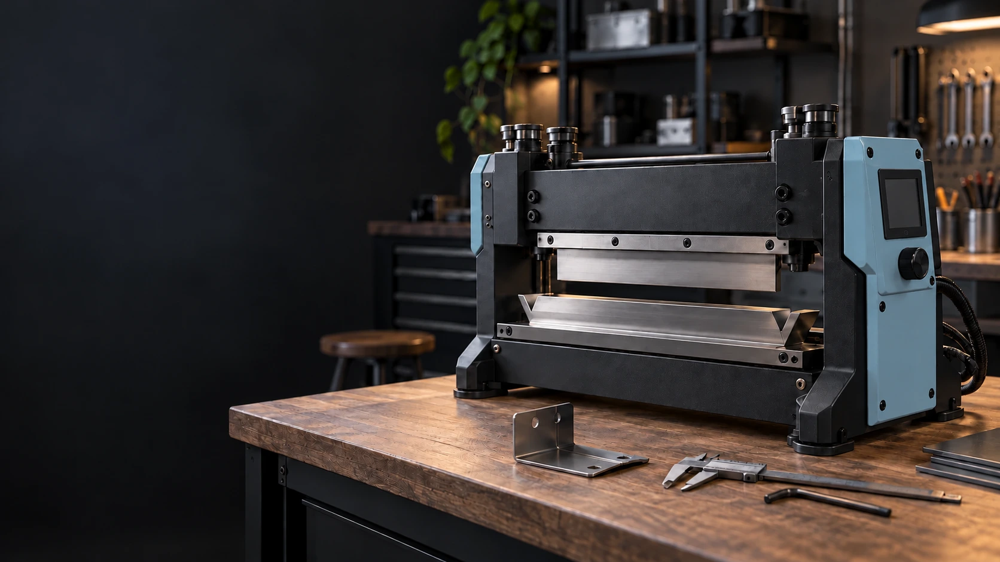

Studio di ingegneria
La meccanica
incontra il
software.
Progettiamo macchine e prodotti connessi per le piccole e medie imprese, dal primo disegno al prototipo.
Esplora le soluzioni
Lo studio
Partiamo dal lavoro
di ogni giorno.
Un processo da semplificare, una macchina da migliorare, un dato da rendere utile. Samera unisce progettazione meccanica e informatica per dare forma a prodotti di nicchia attorno a esigenze concrete.

Le competenze
- Design
- Progettazione meccanica e sviluppo di prodotto, dall’esigenza al primo prototipo.
- Make
- Costruzione e integrazione di hardware, elettronica e software in un unico sistema.
- Connect
- Sensori, connettività e intelligenza artificiale per trasformare i segnali delle macchine in informazioni utili.
Esempio di progettazione
Un sensore da montare su una macchina esistente
Immagina di voler contare i pezzi in uscita da una macchina. Prima di scegliere il sensore, conviene guardare il pezzo nel punto in cui passa. Due pezzi ravvicinati risultano distinguibili? L’operatore deve poter raggiungere quella zona per la pulizia?
Una staffa stampata in 3D permette di provare la posizione sul banco. Facendo passare una sequenza di pezzi contati a mano si può confrontare il totale con quello registrato dal software. Se i conteggi divergono, la prova aiuta a capire se intervenire sul fissaggio, sulla lettura o sulla logica di conteggio.
Esplora gli ambiti applicativiStampa 3D su misura
Prototipi da provare al banco, ricambi e piccole serie per privati e aziende. Puoi caricare un modello 3D o partire da un disegno.